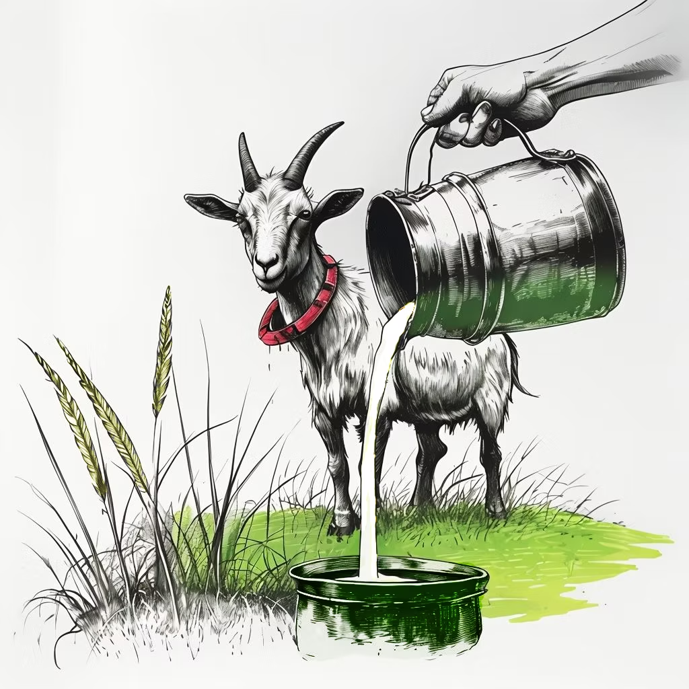

Did Ancient People Know That Cows Could Give Milk?
It sounds like an obvious question, of course they knew! But the history of dairy is more complicated and more fascinating than most people realize.
Why Drinking Milk Was Actually a Big Problem
Milk is actually not easy for adult humans to digest. We need a special enzyme called lactase to break down lactose, the sugar in milk. Most adult mammals, including most adult humans throughout most of history, don't produce this enzyme. So drinking milk as an adult would have made early humans quite sick.
For dairy farming to take hold, two things had to happen: the animals had to be domesticated long enough to produce more milk than their young needed, and humans had to evolve lactase persistence, the ability to digest milk into adulthood. This means that dairy farming didn't happen right away after animals were domesticated. It came later, and the animal bones show this clearly.
What the Bones Tell Us
In the Southern Levant, we have tracked this change across thousands of sites. In the early Chalcolithic period (around 4900–4500 BCE), age profiles of sheep and goat bones show animals being slaughtered at prime meat age, 1.5 to 3 years. Nobody was keeping them for their milk. But by the later Chalcolithic (4500–3500 BCE), patterns shift: more female animals surviving to old age, more young animals being culled shortly after birth, a classic sign in animal bones archaeology that their mothers' milk was being redirected to humans.
Ancient ceramic churns, butter-making vessels, start appearing in the archaeological record at exactly the same time. The bones and the ceramics together tell the same story: humans and animals were entering a new kind of relationship, one with profound consequences for civilization.
Why Dairy Changed the World
Dairy food is calorie-dense, storable (as cheese or butter), and tradeable. It helped fuel the rise of early urban societies. When ancient farmers figured out that a living cow, goat, or sheep could provide ongoing food instead of just a single meal of meat, it was a revolutionary moment in the history of how humans eat. This shift is part of what archaeologists call the Secondary Products Revolution, a turning point in ancient farming history when animals became long-term economic partners.
A Fun Fact to Share With Your Kids
About 65% of adults worldwide are still lactose intolerant! The ability to drink milk as an adult evolved in some human populations, particularly in Europe and parts of Africa, much more recently than we might think. So if someone in your family can't drink milk, they're actually closer to what ancient humans were like than those who can!
Try This at Home: A Chalcolithic Experiment
Want to do a simple activity inspired by ancient dairy history? Try making butter with your kids! Pour heavy cream into a jar, seal it, and shake it for 10–15 minutes. The cream separates into butter and buttermilk, the same basic process ancient farmers discovered 6,000 years ago. You'll be doing exactly what a Chalcolithic farmer in the Southern Levant once figured out for the very first time.
How Can You Learn More?
These themes, animal domestication, ancient farming, and how humans and animals have lived together for thousands of years, are at the heart of the ZooArchaeology for Kids book series. Written by a real zooarchaeologist, the books bring these stories to life through vivid illustrations of ancient skeletons and the living creatures they once were. Perfect for curious kids ages 6–16.

References
Namdar et al. 2021. Archaeological and Anthropological Sciences 13/207. https://doi.org/10.1007/s12520-021-01446-6
Namdar & Sapir-Hen 2023. Animal economy in the Chalcolithic of the Southern Levant. Springer.